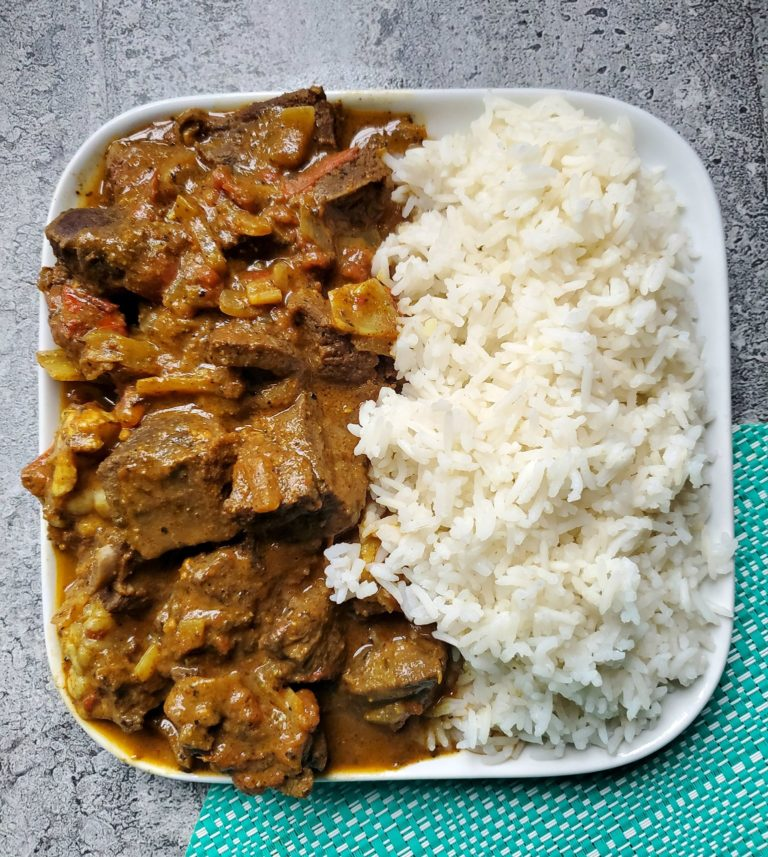

Curry Goat

Description:
Jamaican curry goat is a traditional Jamaican dish known for its
rich and flavorful taste. It involves marinating goat meat in
a blend of spices, including Jamaican curry powder, thyme,
scallion, garlic, and Scotch bonnet pepper, among others.
The meat is then slow-cooked until tender, resulting in a
hearty and aromatic curry. The dish is often served with
rice and peas, providing a delicious combination of savory
and spicy flavors that are characteristic of Jamaican
cuisine.
Ingredients:
- 2-3 pounds goat meat, cut into cubes
- 3 tablespoons Jamaican curry powder
- 1 tablespoon all-purpose seasoning
- 1 teaspoon thyme
- 4-6 scallions, chopped
- 4 cloves garlic, minced
- 1 medium onion, chopped
- 1-2 Scotch bonnet peppers, seeded and finely chopped (adjust for spice preference)
- 2 tablespoons vegetable oil
- 2 cups water or beef/chicken broth
- 2 potatoes, peeled and diced (optional)
- Salt and pepper to taste
Instructions:
- In a bowl, mix the goat meat with Jamaican curry powder, all-purpose seasoning, thyme, scallions, garlic, onion, and Scotch bonnet peppers. Allow the meat to marinate for at least 1-2 hours, or overnight in the refrigerator for better flavor absorption.
- Heat vegetable oil in a large pot over medium-high heat. Add the marinated goat meat and brown on all sides.
- Pour in water or broth, bring to a boil, then reduce the heat to low. Cover and simmer for about 1.5 to 2 hours, or until the goat meat becomes tender. If using potatoes, add them during the last 30 minutes of cooking.
- Adjust seasoning with salt and pepper to taste. Continue simmering until the curry sauce thickens to your liking.
- Serve the Jamaican Curry Goat over rice or with traditional sides like rice and peas.